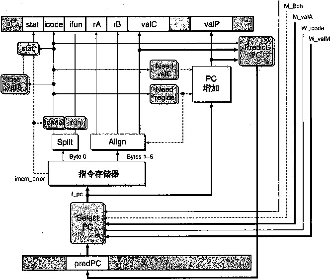
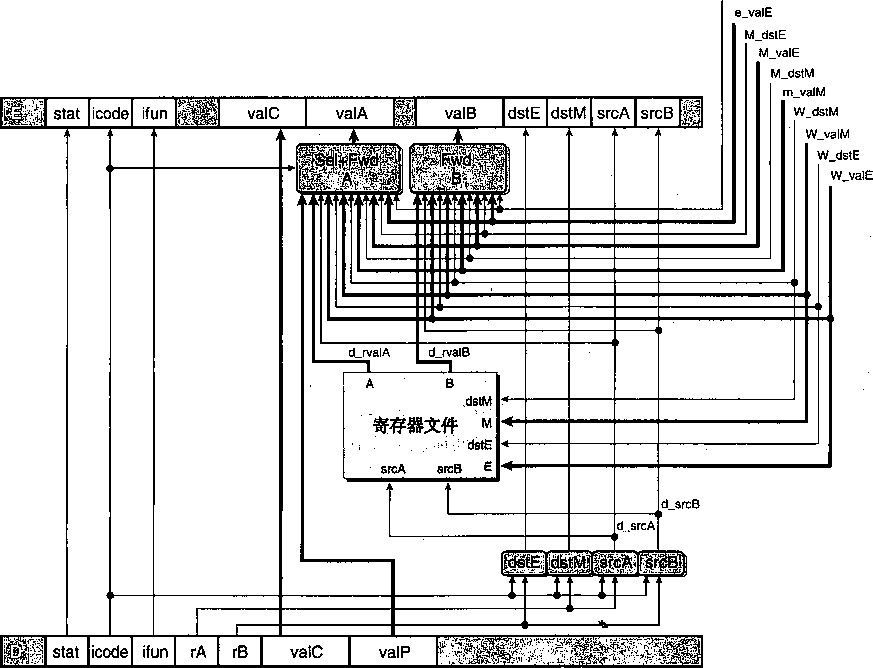

|
F |
D：. |
s E |
M |
w |
|||||
|
F |
' D . |
E |
M |
Wi |
|||||
|
；F |
D |
E |
W |
w |
|||||
|
F |
D |
III |
M |
w |
|||||
|
F |
m |
E |
M |
W |
|||||
|
_ |
D |
E |
M |
W |
|||||
srcA = °/ 0 edx srcB = %eax
valA—R[%edx] = 10 va 旧 <- W_valE = 3
prog2
0x000: |
irmovl $10，％edx |
0x006: |
irmovl $3,%eax |
0x00c: |
nop |
OxOOd: |
nop |
OxOOe: |
addl %edx,%eax |
0x010: |
halt |
图449 prog2使用转发的流水线化的执行。在周期6中，译码阶段逻辑发现有在写回阶段中对寄存 器％ 63 %未进行的写。它用这个值，而不是从寄存器文件中读出的值，作为源操作数valB
如图4-50所示，当访存阶段中有对寄存器未进行的写时，也可以使用数据转发，以避免 程序 P rog3中的暂停。在周期5中，译码阶段逻辑发现，在写回阶段中端口 E上有对寄存 器％6€^未进行的写，以及在访存阶段中有会在端口 E上对寄存器％eax未进行的写。它不会暂 停直到这些写真正发生，而是用写回阶段中的值（信号W_valE)作为操作数valA,用访存阶 段中的值（信号M_valE)作为操作数valB。
为了充分利用数据转发技术，我们还可以将新计算出来的值从执行阶段传到译码阶段，以 避免程序prog4所需要的暂停，如图4-51所示。在周期4中，译码阶段逻辑发现在访存阶段中 有对寄存器％edx未进行的写，而且执行阶段中ALU正在计算的值稍后也会写入寄存器％eax。 它可以将访存阶段中的值（信号M_valE)作为操作数valA,也可以将ALU的输出（信号 e一valE)作为操作数valB。注意，使用ALU的输出不会导致任何时序问题。译码阶段只要在 Bf钟周期结束之前产生信号valA和valB,在时钟上升开始下一个周期时，流水线寄存器E就 能装载来自译码阶段的值。而在此之前ALU的输出已经是合法的了。
程序prog2〜 P rog4中描述的转发技术的使用都是将ALU产生的以及其目标为写端口 E 的值进行转发，其实也可以转发从存储器中读出的以及其目标为写端口 M的值。从访存阶段, 我们可以转发刚刚从数据存储器中读出的值（信号m_valM)。从写回阶段，我们可以转发对端 口 M未进行的_ (信号W一valM)。这样一共就有5个不同的转发源(e_valE、m_valM、
M_valE、W_valM和W_valE),以及两个不同的转发目的（valA和valB)。
2 3 4 5 6 7 8 9
F |
D |
e |
M V , C |
職 |
||||
:卞’ |
D |
E |
：M |
w |
||||
'、F 丨' |
D |
m |
M |
w |
||||
, |
E |
M ( |
W |
|||||
^ 'E |
M |
W |
||||||
周期 5
?.卜〜 v W - |
+ ^ |
||
W_dstE = °/,edx |
R[%edx] 和 10 |
||
W_valE = 10 |
.- 輪舶 |
||
M_dstE = °/ 0 eax M \/alP = A |
|||
, *■ |
|||
» * . - ^ 觀驗議議鐘 |
|||
srcA = %edx srcB = 7*eax |
valA^ W_valE = 10 valB-*- M_valE = 3 ^ t>^y y•八和 |
||
# prog4
0x000: irmovl $10, # / 0 edx 0x006: irmovl $3, °/,eax 0x00c: addl %edx, 8 /.eabc OxOOe: halt
# prog3
0x000: irmovl $10, # /,edx 0x006: irmovl $3,%eax 0x00c: nop
OxOOd: addl °/oedx,y o eax OxOOf: halt
图4-50 prog3使用转发的流水线化的执行。在周期5中，译码阶段逻辑发现有在写回阶段中对寄存 未进行的写，以及在访存阶段中对寄存器％eax未进行的写。它用这些值，而不是 从寄存器文件中读出的值，作为valA和valB的值
|
1 2 |
3 |
4 |
5 |
6 |
7 |
8 |
|
|
(f 、 ,i < F |
D |
E |
::筹 |
W |
|||
|
F |
p |
M |
W |
||||
|
幽 |
|||||||
|
m |
r D ' r |
M ' |
w |
||||
周期 4
:%edx 10
M_dstE : M_valE =
E_dstE = °/,eax
醒
_廳戀:論議
srcA = %edx srcB = °/ 0 6slx
valA^-M_valE : va 旧e一vdE =
图4-51 prog4使用转发的流水线化的执行。在周期4中，译码阶段逻辑发现有在访存阶段中对寄存 器％edx未进行的写，还发现在执行阶段中正在计算寄存器%63%的新值。它用这些值，而 不是从寄存器文件中读出的值，作为valA和valB的值
图4-49〜图4-51的扩展图还表明译码阶段逻辑能够确定使用来自寄存器文件的值，还是用 转发过来的值。与每个要写回寄存器文件的值相关的是目的寄存器ID。逻辑会将这些ID与源寄 存器ID srcA和srcB柑比较，以此来检测是否需要转发。可能有多个目的寄存器ID与一个源 ID相等。要解决这样的情况，我们必须在各个转发源中建立优先级关系。在学习转发逻辑的详 细设计时，我们会讨论这个内容。
图4-52是PIPE的结构，它是PIPE-的扩展，能通过转发处理数据冒险。将这幅图与 PIPE-的结构（图4-41)相比，我们可以看到来自5个转发源的值反馈到译码阶段中两个标号 为“Sel+Fwd A”和“Fwd B”的块。标号为“Sel+Fwd A”的块是PIPE—中标号为“Select A”的块的功能与转发逡辑的结合。它允许流水线寄存器E的valA为已增加的程序计数器值 valP,从寄存器文件A端口读出的值，或者某个转发过来的值。标号为“Fwd B”的块实现的 是源操作数valB的转发逻辑。
图4-52流水线化的最终实现——PIPE的硬件结构。添加的旁路路径能够转发前面三条指令的结果。 这使得我们不暂停流水线就能够处理大多数形式的数据冒险
加载/使用数据冒险 /
有一类数据冒险不能单纯用转发来解决，因为存储器读在流水线发生的比较晚。图4-53举 例说明 了加载/使用冒险 （load/use hazard),其中一条指令（位于地址0x018的mrmovl)从 存储器中读出寄存器％eax的值，而下一条指令（位于地址0x0le的addl)需要该值作为源 操作数。图的下部是周期7和8的扩展说明，在此假设所有的程序寄存器都初始化为0。addl 指令在周期7中#要该寄存器的值，但是mrmovl指令直到周期8才产生这个值。为了从 mrmovl “转发到” addl,转发逆辑不得不将值送_到过去的时间！这显然是不可能的，我们 必须找到其他机制来解决这种形式的数据冒险。（位于地址0x012的irmovl指令产生的寄存 器，%ebx的值,会被位于地址0x0le的addl指令使用，转发能够处理这种数据冒险。）
10 11
6 7
D-
F
周期7
%eax M[128] =.3
M一dstE : M.valE
# prog5 |
1 |
2 |
|
0x000: |
irmovl $128,%edx |
F |
D |
0x006: |
irmovl $3,°/ 0 ecx |
F |
|
0x00c: |
rmmovl %ecx, 0(%edx) |
||
0x012: |
irmovl $10,%ebx |
||
0x018: |
mrmovl 0(%edx),%eax # Load %eax |
||
OxOle: |
addl %ebx, %eax # Use %ea.x |
||
0x020: |
halt |
||
valA^— M_valE = va旧和 R[%eax]
10^
=0
图 4 _ 53 加载/便用数据冒险的示例。addl指令在周期7译码阶段中需要寄存器％的％的值。前面的 mrmovl指令在周期8访存阶段中读出这个寄存器的新值，这对于addl指令来说太迟了
如图4-54所示，我们可以将暂停和转发结合起来，避免加载/使用数据冒险。这需要修改 控制逻辑，但是可以使用现有的旁路路径。当mrmovl指令通过执行阶段时，流水线控制逻辑 发现译码阶段中的指令（addl)需要从存储器中读出的结果。它会将译码阶段中的指令暂停一 个周期，导致执行阶段中插入一个气泡。如周期8的扩展说明所示，从存储器中读出的值可以 从访存阶段转发到译码阶段中的addl指令。寄存器％ebx的值也可以从写回阶段转发到访存阶 段。就像流水线图，从周期7中标号为“D”的方框到周期8中标号为“E”的方框的箭头表明 的那样，插入的气泡代替了正常情况下本来应该继续通过流水线的addl指令。
这 种用暂停来处理加载/使用晉险的方法称为加 载互锁 （load interlock)。加载互锁和转发技 术结合起来足以处理所有可能类型的数据冒险。因为只有加载互锁降低流水线的吞吐量，我们几 乎可以实现每个时钟周期发射一条新指令的吞吐量目标。
# prog5 1
m
I
0x000: irmovl $128,%edx 0x006: irmovl $3,*/,ecx OxOOc: rmmovl %ecx, 0(%edx)
0x012: irmovl $10,%ebx 0x018: mrmovl 0(%edx) ,°/ # eax # Load %eax bubble
0x0le: addl 7,ebx,7,eax # Use %eax 0x020: halt
周期 8
图4-54用暂停来处理加载/使用冒险。通过将addl指令在译码阶段暂停一个周期，就可以将valB 的值从访存阶段中的mrmo.yl指令转发到译码阶段中的addl指令
异常处理
正如第8章将讨论的，处理器中很多事情都会导致异常控制流，此时，程序执行的正常流程 被破坏掉。异常可以由程序执行从内部产生,也可以由某个外部信号从外部产生。我们的指令集 体系结构包括三种不同的内部产生的异常：1) halt指令，2)有非法指令和功能码组合的指令, 3)取指或数据读写试图访问一个非法地址。一个更完整的处理器设计应该也能处理外部异常，例 如当处理器收到一个网络接口收到新包的信号,或是一个用户点击鼠标按钮的信号。正确处理异 常是任何微处理器设计中很有挑战性的一方面。异常可能出现在不可预测的时间,需要明确地中 断通过处理器流水线的指令流。我们对这三种内部异常的处理只是让你对正确发现和处理异常的 真实复杂性略有了解。
我们把导致异常的指令称为异常指令（excepting instruction)。在使用非法指令地址的情况 中，没有实际的异常指令，但是想象在非法地址处有一种“虚拟指令”会有所帮助。在简化的 ISA模型中，我们希望当处_器遇到异常时,会停止，设置适当的状态码，如图4-5所示。看上 去应该是到异常指令之前的所有指令都已经完成,而其后的指令都不应该对程序员可见的状态产 生任何影响。在一个更完整的设计中,处理器会继续调用异常处理程序（exception handler),这 是操作系统的一部分，但是实现异痦处理的这部分超出了本书的范围。
在一个流水线化的系统中，异龠处理包括一些细节问题。首先，可能同时有多条指令会引起 异常。例如，在一个流水线操作的周期内，取指阶段中有halt指令,而数据存储器会报告访存 阶段中的指令数据地址越界。我们必须确定处理器应该向操作系统报告哪个异常。基本原则是： 由流水线中最深的指令引起的异常,优先级最高。在上面那个例子中,应该报告访存阶段中指令 的地址越界。就机器语言程序来说，访存阶段中的指令本来应该在取指阶段中的指令开始之前就 结束的，所以，只应该向操作系统报告这个异常。
第二个细节问题是，当首先取出一条指令，开始执行时，导致了一个异常，而后来由于分支 预测错误，取消了该指令。下面就是一个这样程序示例的目标代码：
0x000: 6300 0x002: 740e000000 0x007: 30f001000000 OxOOd: 00 OxOOe:
OxOOe: ff
xorl %eax , %eax jne Target # Not taken
irmovl $1, %eax # Fall through
halt Target:
.byte OxFF # Invalid instruction code
在这个程序中，流水线会预测选择分支，因此它会取出并以一个值为 OxFF 的字节作为指令 ( 由汇编代码中 .byte 命令产生的 ) 。译码阶段会因此发现一个非法指令异常。稍后，流水线会 发现不应该选择分支，因此根本就不应该取出位于地址 OxOOe 的指令。流水线控制逻辑会取消 该指令，但是我们想要避免出现异常。 ，
第三个细节问题的产生是因为流水线化的处理器会在不同的阶段更新系统状态的不同部分。 有可能会出现这样的情况：一条指令导致了一个异常，它后面的指令在异常指令完成之前改变了 部分状态。比如说，考虑下面的代码序列，其中假设不允许用户程序访问大于 0XC0000000 的 地址（与 32 位 Linux 版本的情况一样）：
1 irmovl $l,%eax
2. xorl %esp,%esp # Set stack pointer to 0 and CC to 100
l pushl %eax # Attempt to write to Oxfffffffc
addl %eax,%eax # (Should not be executed) Would set CC to 000
pushl 指令导致一个地址异常，因为减小栈指针会导致它绕回到 OxfffffffCo 在访存阶 段会发现这个异常。在同一周期中， addl 指令处于执行阶段，而它会将条件码设置成新的值。 这就会违反异常指令之后的所有指令都不能影响系统状态的要求。
一般地 ， 通过在流水线结构中加入异常处理逻辑，我们既能够从各个异常中做出正确的 选择，也能够避免出现由于分支预测错误取出的指令造成的异常。这就是为什么我们会在每 个流水线寄存器中包括一个状态码 Stat ( 见图 4-41 和图 4-52 )。如果一条指令在其处理中于 某个阶段产生了一个异常，这个状态字段就被设置成指示异常的种类。异常状态和该指令的 其他信息一起沿着流水线传播，直到它到达写回阶段。在此，流水线控制逻辑发现出现了异 常，并停止执行。
为了避免异常指令之后的指令更新任何程序员可见的状态，当处于访存或写回阶段中的指 令导致异常时，流水线控制逻辑必须禁止更新条件码寄存器或是数据存储器。在上面的示例程 序中，控制逻辑会发现访存阶段的 pushl 导致了异常，因此应该禁止 addl 指令更新条件码 寄存器。 、，
让我们来看看这种处理异常的方法是怎样解决刚才提到的那肆细节问题的。当流水线中有一 个或多个阶段出现异常时，信息只是简单地存放在流水线寄存器的状态字段中。异常事件不会对 流水线中的指令流有任何影响，除了会禁止流水线中后面的指令更新程序员可见的状态（条件码 寄存器和存储器 ) ，直到异常指令到达最后的流水线阶段。因为指令到达写回阶段的顺序与它们 在非流水线化的处理器中执行的顺序相同 ， 所以我们可以保证第一条遇到异常的指令会第一个到 达写回阶段，此时程序执行会停止，流水线寄存器 W 中的状态码会被记为程序状态。如果取 出了某条指令，过后又取消了 , 那么所有关于这条指令的异常状态信息也都会被取消。所有导致 异常的指令后面的指令都不能改变程序员可见的状态。携带指令的异常状态以及所有其他信息通 过流水线的简单原则是处理异常的简单而可靠的机制。
RPE各阶段的实现
现在已经创建了 PIPE的整体结构，PIPE是我们使用了转发技术的流水线化的Y86处理器。 它使用了一组与前面顺序设计相同的硬件单元，另外增加了一些流水线寄存器、一些重新配置的 逻辑块 ， 以及增加的流水线控制逻辑。本节将浏览各个逻辑块的设计，而将流水线控制逻辑的设 计放到下一节介绍。许多逻辑块与SEQ和SEQ+中相应部件完全相同 ， 除了我们必须从来自不 同流水线寄存器（用大写的流水线寄存器的名字作为前缀）或来自各个阶段计算（用小写的阶段 名字的第一个字母作为前缀）的信号中选择适当的值。
作为一个示例，比较SEQ中产生srcA信号逻辑的HCL代码与PIPE中相应的代码 ：
Code from SEQ
int srcA =[
icode in { IRRMOVL, IRMMOVL, IOPL, IPUSHL } : rA;
icode in { IPOPL, IRET > : RESP;
1 : RNONE; # Don't need register
]；
Code from PIPE
int d_srcA =[
D_icode in { IRRMOVL, IRMMOVL, IOPL, IPUSHL > : D_rA;
D^icode in { IPOPL, IRET } : RESP;
1 : RNONE; # Don't need register
]；
它们的不同之处只在于PIPE信号都加上了前缀：“D一”表示源值，以表明信号来自流水线 寄存器D,而“d_”表示结果值，以表明它是在译码阶^中产生的。为了避免重复，我们在此 就不列出那些与SEQ中代码只有名字前缀不同的块的HCL代码。网络旁注ARCH :HCL中列出 了完整的PI?E的HCL代码。
1 .PC选择和取指阶段
图4-55提供了 PIPE取指阶段逻辑的详细描述。像前面讨论过的那样 ， 这个阶段必须选择程 序计数器的当前值，并且预测下一个PC值。从存储器中读取指令和抽取不同指令字段的硬件单 元与SEQ中考虑的一样（参见4.3.4节中.的取指阶段)。
PC选择逻辑从三个程序计数器源中进行选择。当一条预测错误的分支进入访存阶段时，会 从流水线寄存器M (信号M一valA)中读出该指令valP的值（指明下一条指令的地址)。当 ret指令进入写回阶段时 ， 会从流水线寄存器W (信号W—valM)中读出返回地址。其他情况 会使用存放在流水线寄存器F (信号FjredPC)中的PC &预测值：
int f_pc =[
Mispredicted branch. Fetch at incremented PC
M.icode == IJXX && !M_Cnd : M_valA;
Completion of RET instruction.
W.icode == IRET : W 一 valM;
Default: Use predicted value of PC
1 : F 一 predPC;
]；
当取出的指令为函数调用或跳转时 ， PC预测逻辑会选择valC,否则就会选择valP:
int f_predPC =[
f_icode in { IJXX, ICALL } : f_valC;
: f_valP;
标号为 “Instr valid”、“Need regids” 和 “Need valC” 的逻辑块和 SEQ 中的一 样,使用适当重命名的源信号。
、-' MJcode

.图4-55 PIPE的PC选择和取指逻辑。在一个周期的时间限制内，处理器只能预测下一条指令的地址
‘ 同SEQ不一样，我们必须将指令状态的计算分成两个部分。在取指阶段，可以测试由于指 令地址越界引起的存储器错误，还可以发现非法指令或halt指令。必须推迟到访存阶段才能发 现非法数据地址。
_练习题 4.28写出信号f一stat的SCL代码，提供取出的指令的临时状态。
2•译码和写0阶段
_ 4-56是PIPE的译码和写回逻辑的详细说明。标号为“dstE”、“dstM”、“srcA”和 “srcB”的块与它们在SEQ实现中的相应部件非常类似。我们观察到，提供给写端口的寄存器 ID来自于写回阶段（信号W一dstE和W_d S tM),而不是来自于译码阶段。这是因为我们希望进 行写的目的寄存器是由写回段中的指令指定的。
—练习题 4.29译码阶段中标号为“dstE”的块根据来自流水线寄存器D中取出的指令的各个字段， 产生寄存器文件E端口的寄存器ID。在PIPE的HCL描述中，得到的信号命名为d一dstE。根据SEQ 信号dstE的HCL描述，写出这个信号的HCL代码。（参考4.3.4节中的译码阶段。）目前不用关心实 现条件传送的逻辑。
这个阶段的复杂性主要是跟转发逻辑相关。就像前面提到的那样，标号为“Sel+Fwd A” 的块扮演商个角色。它为后面的阶段将valP信号合并到valA信号，这样可以减少流水线寄存 器中状态的数量。它还实现了源操作数valA的转发逻辑。
合并信号valA和valP的依据是，只有call和跳转指令在后面的阶段中需要valP的 值，而这些指令并不需要从寄存器文件A端口中读出的值。这个选择是由该阶段的icode信号
来控制的。当信号D一icode与call或jXX的指令代码相匹配时，这个块就会选择D_valP作 为它的输出。
e 一 dstE

图4-56 PIPE的译码和写回阶段逻辑。没有指令既需要valP又需要来自寄存器端口 A中读出的值，因此 对后面的阶段来说，这两者可以合并为信号valA。标号为“Sel+FwdA”的块执行该任务，并实 现源操作数valA的转发逻辑。标号为“FwdB”的块实现源操作数valB的转发逻辑。寄存器写 的位置是由来自写回阶段的dstE和dstM信号指定的，而不是来自于译码阶段，因为它要写的 是当前正在写回阶段中的指令的结果
4.5.7节中提到有5个不同的转发源，每个都有一个数据字和一个目的寄存器ID ：
数据字 |
寄存器ID |
源描述 |
e—valE |
e_dstE |
ALU输出 |
m_valM |
M_dstM |
存储器输出 |
M_valE |
M一dstE |
访存阶段中对端口 E未进行的写 |
W_valM |
W—dstM |
写回阶段中对端口 M未进行的写 |
W_valE |
W一dstE |
写回阶段中对端口它未进行的写 |
如果不满足任何转发条件，这个块就应该选择d_rvalA作为它的输出，也就晕从寄存器端 口 A中读出的值。
综上所述，我们得到以下流水线寄存器E的valA新值的HCL描述：
d_vaXA :[
D_ icode in { ICALL, I JXX > : D__valP; # Use incremented PC
d_srcA
d_srcA
d_srcA
d_srcA
d_srcA
e_dstE
M_dstM
M_dstE
W_dstM
W.dstE
e_valE
m-valM
M_valE
W_valM
W_valE
Forward valE from execute
Forward valM from memory
Forward valE from memory
Forward valM from write back
Forward valE from write back
d_rvalA; # Use value read from register file
上述HCL代码中赋予这五个转发源的优先级是非常重要的。这种优先级由HCL代码中检测 五个目的寄存器ID的顺序来确定。如果选择了其他任何顺序，对某些程序来说，流水线就会出 错。图4-57给出了一个程序示例，要求对执行和访存阶段中的转发源设置正确的优先级。在这 个程序中，前两条指令写寄存器％edx,而第三条指令用这个寄存器作为它的源操作数。当指令 rrmovl在周期4到达译码阶段时，转发逻辑必须在两个都以该源寄存器为目的的值中选择一 个。它应该选择哪一个昵？为了设定优先级，我们必须考虑当一次执行一条指令时，机器语言程 序的行为。第一条irmovl指令会将寄存器%edx设为10,第二条irmovl指令会将之设为3,然 后rrmovl指令会从%edx中读出3。为了模拟这种行为，流水线化的实现应该总是给处于最早流水 线阶段的转发源以较高的优先级，因为它保持着程序序列中设置该寄存器的最近的指令。因此，上 述HCL代码中的逻辑首先会检测执行阶段的转发源，然后是访存阶段，最后才是写回阶段。
srcA: y 9 edx | valA—~e一vaiE = 3
謹
# prog6
0x000: irmovl $10,%edx 0x006: irmovl $3,%edx OxOOc: rrmovl %edx, °/ 0 eax OxOOe: halt
只有指令popl%esp会关心在访存或写回阶段两个源之间的转发优先级，因为K有这条指 令能同时写两个寄存器。
|
1 |
2 |
3 |
4 |
5 |
6 |
7 |
8 |
|
F |
D |
E |
HI |
w |
|||
|
F |
D |
國 |
M |
w |
|||
|
' F |
_ |
E |
M |
w |
|||
|
_ |
D |
E |
M |
W |
周期4
图4-57转发优先级的说明。在周期4中，％ed X 的值既可以从执行阶段也可以从访存阶段得到。转 发逻辑应该选择执行阶段的值，因为它代表最近产生的该寄存器的值 _练习题4.30假设d_valA的HCL代码中第三和第四种情况（来自访存阶段的两个转发源）的顺序 是反过来的。请描述下列程序中rrmovl指令（第5行）导致的行为：
irmovl $5, %edx
irmovl $0x100,%esp
rmmovl %edx,0(%esp)
.4 popl %esp
5 rrmovl 0 / 0 esp,%eax
_练习题4.31假设d_valA的HCL代码中第五和第六种情况（来自写回阶段的两个转发源）的顺序是 反过来的。写出一个会运行错误的Y86程序。请描述错误是如何发生的，以及它对程序行为的影响。 ®练习题4.32根据提供到流水线寄存器E的源操作数valB的值，写出信号d_valB的HCL代码。
写回阶段的一小部分是保持不变的。如图4-52 : 所示，整个处理器的状态Stat是一个块根据 流水线寄存器W中的状态值计算出来的。回想4.1.1节，状态码应该指明是正常操作（AOK), 还是三种异常条件中的一种。由于流水线寄存器W保存着最近完成的指令的状态，很自然地要 用这个值来表示整个处理器状态。唯一要考虑的特殊情况是当写回阶段有气泡时。这是正常操作 的一部分，因此对于这种情况，我们也希望状态码是AOK:
int Stat =[
W.stat == SBUB : SAOK;
1 : W_stat;
]；
3•执行阶段
图4-58是PIPE执行阶段的逻辑。这些硬件单元和逻辑块同SEQ中的相同，使用的信号做 适当的重命名。我们可以看到信号e—valE和e 一 dstE作为转发源，指向译码阶段。一个区别 是标号为“Set CC”的逻辑以信号作为输入，这个逻辑决定了是否要更新 条件码。这些信号用来检查一条导致$常的指令正在通过后面的流水线阶段的情况，因此，任何 对条件码的更新都会被禁止。这部分设计在4.5.11节中讨论。
图4-58 PIPE的执行阶段逻辑。这一部分的设计与SEQ实现中的逻辑非常相似
® 练习题 4.33 d—valA 的 HCL 代码中的第二种情况使用了信号 e _dstE, 判断是否要选择ALU的输 出 e 一 valE 作为转发源。假设我们用 E—dstE， 也就是流水线寄存器 E 中的目的寄存器ID,作为这个 选择。写出一个釆用这个修改过的转发逻辑就会产生错误结果的Y86程序。
4.访存阶段
图4-59是PIPE的访存阶段逻辑。将这个逻辑与SEQ的访存阶段（图4-30)相比较，我们 ( 看到，正如前面提到的那样，PIPE中没有SEQ中标号为“Data”的块。这个块是用来在数据 源valP (对call指令来说）和valA中进行选择的，然而这个选择现在由译码阶段中标号为 “Sel+FwdA”的块来执行。这个阶段的其他块都和SEQ相应的部件相同，釆用的信号做适当的
_练习题4.34在这个阶段，通过检查数据存储器的非法地址情况，我们能够完成状态码Stat的计 算。写出信号m 一 stat的HCL代码。
图4-59 PIPE的访存阶段逻辑。许多从流水线寄存器M和W来的信号被传递到较早的阶段，以提供 写回的结果、指令地址以及转发的结果
重命名。在图中，你还可以看到许多流水线寄存器中的值，同时M和W还作为转发和流水线控 制逻辑的一部分，提供给电路中其他部分。
4.5.11流水线控制逻辑
现在准备创建流水线控制逻辑，以完成我们的PIPE设计。这个逻辑必须处理以下4种控制 情况，这些情况是其他机制（例如数据转发和分支预测）不能处理的：
处理ret ：流水线必须暂停直到ret指令到达写回阶段。
加载/使用冒险：在一条从存储器中读出一个值的指令和一条使用该值的指令之间，流水线
必须暂停一个周期。
预测错误的分支：在分支逻辑发现不应该选择分支之前，分支目标处的几条指令已经进入流 水线了。必须从流水线中去掉这些指令。
异常：当一条指令导致异常，我们想要禁止后面的指令更新程序员可见的状态，并且在异常 指令到达写回阶段时，停止执行。
我们先浏览每种情况所期望的行为，然后再设计处理这些情况的控制逻辑。
1.特殊控制情况所期望的处理
对于ret指令，考虑下面的示例程序。这个程序是用汇编代码表示的，左边是各个指令的
|
地址以供参考 : |
||||
|
0x000: |
irmovl Stack,%esp |
# |
Initialize stack pointer |
|
|
0x006: |
call Proc |
# |
procedure call |
|
|
0x00b: |
irmovl |
$10,%edx |
# |
return point |
|
0x011: |
halt |
|||
|
0x020: |
.pos 0x20 |
|||
|
0x020: |
Proc: |
# |
Proc: |
|
|
0x020: |
ret |
# |
return immediately |
|
|
0x021: |
rrmovl |
%edx,%ebx |
# |
not executed |
|
0x030: |
.pos 0x30 |
|||
|
0x030: |
Stack: |
# |
Stack: Stack pointer |
|
图4-60给出了我们希望流水线如何来处理ret指令。同前面的流水线图一样，这幅图展示 了流水线的活动,时间从左向右增加。与前面不同的是,指令列出的顺序与它们在程序中出现的 顺序并不相同，因为这个程序含有一*个控制流,指令并不是按线性顺序执行的。看看指令的地址 就能知道它们在程序中的位置。 •
如图所示在周期3取出ret指令，并沿着流水线前进，在周期7进入写回阶段。在它经 过译码、执行和访存阶段时，流水线不能做任何有用的活动。取而代之地，我们只能在流水线中 插入3个气泡。一旦ret指令到达写回阶段，PC选择逻辑就会将程序计数器设为返回地址，然 后取指阶段就会取出位于返回点（地址0x00b)处的irmovl指令。
图4-61是示例程序中ret指令的实际处理过程。在此可以看到，在流水线的取指阶段没有 办法插入气泡。每个周期，取指阶段从指令存储器中读出一条指令。看看4.5.10节中实现PC预 测逻辑的HCL代码，我们可以知道，对ret指令来说，PC的新值被预测成7 & 1?,也就是下 一条指令的地址。在我们的示例程序中，这个地址会是0x021,即ret后面rrmovl指令的地 址。对这个例子来说，这种预测是不对的，即使对大部分情况来说，也是不对的，但是在设计 中，我们并不试图正确预测返回地址。取指阶段会暂停3个时钟周期，导致取出rrmovl指令, 但是在译码阶段就被替换成了气泡。这个过程在图4-61中的表示为，3个取指用箭头指向下面 的气泡，气泡会经过剩下的流水线阶段。最后，在周期7取出irmovl指令。比较图4-60和图 4-61,可以知道,我们的实现达到了期望的效果，只是连续3个周期取出了不正确的指令。
# prog7 |
1 |
2 |
3 |
4 |
5 |
6 |
7 |
8 . |
9 |
10 11 |
|
0x000: irmovl Stack j 7*edx |
F |
D |
E |
M > |
w |
||||||
0x006 : call proc . . |
... |
:, 抄 '.:: |
E ' |
W |
|||||||
0x020: ret |
D ： |
:;.: 虚:;.丨 |
M |
-W ： |
|||||||
bubble |
F |
D |
E |
M |
W |
||||||
bubble |
F |
D |
E |
M |
W |
||||||
bubble |
F |
D |
E |
M |
W |
||||||
0x00b: irmovl $10,%edx # Return point |
F |
D : |
... E |
M |
w |
||||||
图 4-60 ret 指令处理的简化视图。当 ret 经过译码、执行和访存阶段时，流水线应该暂停，在处理 过程中插入 3 个气泡。一旦 ret 指令到达写回阶段（周期 7), PC 选择逻辑就会选择返回地 址作为指令的取指地址
# prog7 |
1 |
2 |
3 |
4 |
5 |
6 |
7 |
8 |
9 |
10 |
11 |
|
0x000: |
irmovl Stack,°/ 0 edx |
D |
llll |
M |
w |
|||||||
0x006: |
call proc |
F |
lifll |
E |
w |
|||||||
0x020: |
ret |
議:l |
D |
III; |
_s: |
w |
||||||
0x021 : |
rrmovl %edx，％ebx # Not executed |
F |
||||||||||
bubble |
u |
D |
E |
M |
W |
|||||||
0x021 : |
rrmovl %edx,%ebx # Not executed |
謙:: |
||||||||||
bubble |
u |
D |
E |
M |
W |
|||||||
0x021: |
rrmovl 0 / O edx, %ebx # Not executed |
|||||||||||
bubble |
u |
D |
E |
M |
w |
|||||||
0x00b: |
irmovl $10,%edx # Return point |
F |
D. |
E |
M |
W |
||||||
® 4-M； ret. 指令处 3 的卖际处理过程。取指阶段反复取也 ret 指令后®的 rrmovl 指令，但是流 水线控制逻辑在译码阶段插入气泡，而不是让rrmovl指令继续下去。由此得到的行为与图 4-60 所杀的等价
在4.5.8节，我们已经描述了对加载/使用冒险所期望的流水线操作，如图4-54所示。只有 mrmovl和popl指令会从存储器中读数据。当这两条指令中的任一条处于执行阶段，且需要该 目的寄存器的指令正处在译码阶段时，我们要将第二条指令阻塞在译码阶段，并在下一个周期往 执行阶段插入一个气泡。此后，转发逻辑会解决这个数据冒险。可以将流水线寄存器D保持为 固定状态，从而将一个指令阻塞在译码阶段。与此同时，还必须将流水线寄存器F保持为固定 状态，这样，就会第二次取出下一条指令。总之，实现这个流水线流需要发现冒险的情况，保持 流水线寄存器F和D固定不变，并且在执行阶段插入气泡。
要处理预测错误的分支，让我们来考虑下面这个用汇编代码表示的程序，左边是各个指令的 地址以供参考：
0x000: xorl %eax,%eax
Not taken Fall through
Target
Target+1
0x002: jne target
0x007: irmovl $1, %eax
OxOOd: halt
OxOOe: target:
OxOOe: irmovl $2, %edx
0x014: irmovl $3, %ebx
0x0la: halt